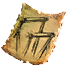
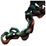
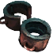

Чертеж: рама
Предметы / С заданий
Открыть в интерактивной вики →
| Вес | 1 |
|---|
Описание
Рама пушки: - 8x  Балка секвойи - 4x
Балка секвойи - 4x  Верштейн]
Верштейн]
Балка секвойи - 4x 
Ворлинские цепи -
Ворлинская арматура — 4x. [Вам трудно понять технические схемы и чертежи. Задача для специалистаВерштейн]